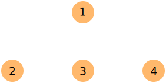
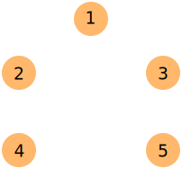

CS3460: Competitive Programming
Data Structures
Built-in Data Structures
- A lot of data structures are either already available in your language of choice, or are easily reproduced using built-in tools.
- Proficiency with several languages can make it easier to use whichever one offers the best tools
- For the purpose of competitive programming, we don't necessarily need to know how these data structures work, just which is the correct one for the task and how to use it.
Linear Data Structures
- Elements form a linear sequence (i.e., internally ordered from left to right, top to bottom, etc).
- These data structures are crucial for problems of every difficulty level!
Fixed-Size Arrays
- Native support in C/C++/Java
- No support for fixed-size array in Python
- Most commonly used data structure.
- Any time that homogenous data needs to be stored sequentially and indexed, a fixed-size array is the correct choice.
- All problems give bounds on input sizes, so it is safe to over-allocate to accomodate all test cases.
Resizeable Arrays
- C++ STL
std::vector, Python list
- Java
java.util.ArrayList
- Useful when the size of the array is not known at compile-time. Designed to handle dynamic resizing at runtime.
- Don't be fooled by varying input sizes! Native arrays will provide better runtime when possible.
Sorting
"Sort first, ask questions later"
- $O(n^2)$ sorting algorithms like bubble sort, selection sort, and insertion sort are often too slow.
- $O(n \lg n)$ sorting algorithms like quick sort and merge sort are often better choices.
Don't implement your own sorting algorithms! (unless you have no other choice)
- C++ STL
std::sort() takes an optional comparator function
- Java
java.util.Arrays provides Arrays.sort()
- Python
list.sort() takes an optional named argument key
Sorting
- In the comparison model, we cannot sort faster than $O(n \lg n)$ (can we prove this?)
- In the RAM model, we can use algorithms such as counting sort, bucket sort, or radix sort to sort in $O(n)$ time.
Search
- What if we are searching for a value in an unsorted array? Use sequential search in $O(n)$
- What if we are searching for a value in a sorted array? Use binary search in $O(\lg n)$
- What if we don't care about the order of the values? Use a hash table, $O(1)$* lookup
Big Integers
- No C/C++ support for integers larger than
uint64_t
- Java
java.math.BigInteger
- Python
int (native support)
- BigInteger is an option when you need support for extremely large values, but slower than similar operations on 32/64 bit integers.
- Avoid if possible. BigInteger is rarely required to solve problems, so consider alternate approaches.
Linked Lists
- C++ STL
std::list
- Java
java.util.LinkedList
- No native support in Python, can be easily built with dataclasses
- Asymptotically attractive, but often to be avoided in competitive programming, due to slow access.
- Pointer operations can be tricky to implement (and debug) in a contest environment.
Stacks
- C++ STL
std::stack
- Java
java.util.Stack (class)
- Python
list provides stack operations
- Restricted list structure, last-in, first-out
- Not often useful alone, but plays a role in other algorithms, such as balancing brackets or computing strongly-connected components in a graph.
Queues
- C++ STL
std::queue
- Java
java.util.Queue (interface), implemented by List types
- Use Python
deque for queue operations
- Restricted list structure, first-in, first-out
- Used in breadth-first search or in certain types of simulations requiring a work queue.
Non-Linear Data Structures
- Elements do not form a linear sequence, and instead are ordered in such a way to make updates and queries more efficient.
- For instance, data structures ordered by a priority mechanism or providing key-value mappings.
Priority Queue (Binary Heap)
- C++ STL
std::priority_queue
- Java
java.util.PriorityQueue
- Python
heapq
- Values are associated with a priority that can be increased or decreased, and the data structure can be queried to report or remove the element with the highest priority.
Priority Queue (Binary Heap)
- Heapsort is a common $O(n \lg n)$ sort algorithm (add elements to heap, remove elements in sorted order)
- Most commonly used in Dijkstra's shortest path algorithm for graphs.
Hash Table
- C++ STL
std::unordered_set, std::unordered_map
- Java
java.util.HashSet, HashMap, HashTable
- Python
set, dict
- Supports extremely fast ($O(1)$ expected) insert, access, update, and removal.
- Only if what we want is exact search. Hash tables don't support inexact search in general. (but can we?)
Balanced Binary Search Tree
- C++ STL
std::set, std::map
- Java
java.util.TreeSet, java.util.TreeMap
- No native support in Python, might be difficult to build
- Great for inexact search. Finding an element (or where an element should be) gives you information about neighboring elements.
- Order Statistics Tree:
rank(e) and select(k) both run in $O(\lg n)$.
Graphs
- A graph is defined $G = (V, E)$, where $V$ is a set of vertices, and $E$ is a set of edges connecting pairs of vertices.
- No native support in any language.
Graphs
An adjacency matrix (ideal for dense graphs)

1 2 3 4
+--------
1 | 0 1 0 0
2 | 0 0 1 0
3 | 1 0 0 1
4 | 0 0 1 0
Graphs
An adjacency list (ideal for sparse graphs)

1: 2 3
2: 1 3 4
3: 1 2 4 5
4: 2 3 5
5: 3 4
Graphs
- An adjacency matrix is just a 2D array of size $n \times n$, where $n = |V|$.
- An adjacency list is usually a dynamic array of arrays, preferring to use resizeable arrays over fixed-size arrays.